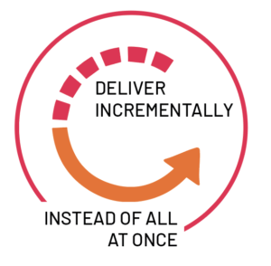

- Agile methodology is a type of project management process, mainly used for software development,
where demands and solutions evolve through the collaborative effort of self-organizing and cross-functional teams and their customers.
- Agile software development refers to a group of software development methodologies based on iterative development,
where requirements and solutions evolve through collaboration between self-organizing cross-functional teams.

Some of the real life examples of agile model
- Restaurant orders:
- Preparation of some of the food before opening the shop (sprint planning)
- Continuous delivery of orders (adhoc stories)
- Number of successful orders (velocity)
- Cricket team:
- Run rate (velocity)
- Team (scrum team self sufficient)
- Over (sprint length)
- Captain/ coach (scrum master)
- Customer satisfaction
- Early and continuous delivery
- Embrace change
- Frequent delivery
- Collaboration of businesses and developers
- Motivated individuals
- Face-to-face conversation
- Functional products
- Technical excellence
- Simplicity
- Self-organized teams
- Regulation, reflection and adjustment
Examples of Agile Methodology
- Agile Scrum Methodology
- Lean Software Development
- Kanban
- Extreme Programming (XP)
- Crystal
- Dynamic Systems Development Method (DSDM)
- Feature Driven Development (FDD)
- Scrum methodology is a project management system that relies on incremental development. Each iteration consists of two- to four-week sprints,
where each sprint's goal is to build the most important features first and come out with a potentially deliverable product.
More features are built into the product in subsequent sprints and are adjusted based on stakeholder and customer feedback between sprints
- Whereas other project management methods emphasize building an entire product in one iteration from start to finish,
scrum methodology focuses on delivering several iterations of a product to provide stakeholders with the highest business value in the least amount of time
- Scrum methodology has several benefits. First, it encourages products to be built faster, since each set of goals must be completed within each sprint's time frame.
It also requires frequent planning and goal setting, which helps the scrum team focus on the current sprint's objectives and increase productivity.
- Sprint:
A Sprint is a time-box of one month or less. A new Sprint starts immediately after the completion of the previous Sprint.
- Release:
When the product is completed then it goes to the Release stage.
-
Sprint Review:
If the product still have some non-achievable features then it will be checked in this stage and then the product is passed to the Sprint Retrospective stage.
- Sprint Retrospective:
In this stage quality or status of the product is checked.
- Product owner: The product owner is the project’s key stakeholder and represents users, customers and others in the process.
The product owner is often someone from product management or marketing, a key stakeholder or a key user.
- Scrum Master: The Scrum Master is responsible for making sure the team is as productive as possible.
The Scrum Master does this by helping the team use the Scrum process, by removing impediments to progress, by protecting the team from outside, and so on.
- Scrum team: A typical scrum team has between five and nine people, but Scrum projects can easily scale into the hundreds. However, Scrum can easily be used by one-person teams and often is.
This team does not include any of the traditional software engineering roles such as programmer, designer, tester or architect.
Everyone on the project works together to complete the set of work they have collectively committed to complete within a sprint.
- Product backlog: The product backlog is a prioritized features list containing every desired feature or change to the product.
Note: The term “backlog” can get confusing because it’s used for two different things. To clarify, the product backlog is a list of desired features for the product.
- Sprint backlog: The sprint backlog is a list of tasks to be completed in a sprint.
- Sprint planning meeting::
At the start of each sprint, a sprint planning meeting is held, during which the product owner presents the top items on the product backlog to the team.
The Scrum team selects the work they can complete during the coming sprint. That work is then moved from the product backlog to a sprint backlog,
which is the list of tasks needed to complete the product backlog items the team has committed to complete in the sprint
- Daily Scrum:
Each day during the sprint, a brief meeting called the daily scrum is conducted. This meeting helps set the context for each day’s work and helps the team stay on track.
All team members are required to attend the daily scrum
-
Sprint review meeting:
At the end of each sprint, the team demonstrates the completed functionality at a sprint review meeting,
during which, the team shows what they accomplished during the sprint. Typically, this takes the form of a demonstration of the new features, but in an informal way; for example,
PowerPoint slides are not allowed. The meeting must not become a task in itself nor a distraction from the process
- Sprint retrospective:
Also at the end of each sprint, the team conducts a sprint retrospective, which is a meeting during which the team (including its ScrumMaster and product owner) reflect on how well
Scrum is working for them and what changes they may wish to make for it to work even better
A Visual Introduction to Scrum
- At the start of each sprint, the team selects some amount of work from the product backlog and commits to completing that work during the sprint.
Part of figuring out how much they can commit to is creating the sprint backlog, which is the list of tasks (and an estimate of how long each will take) needed to
deliver the selected set of product backlog items to be completed in the sprint.
- Scrum Master: The Scrum Master is responsible for making sure the team is as productive as possible.
The Scrum Master does this by helping the team use the Scrum process, by removing impediments to progress, by protecting the team from outside, and so on.
- Scrum team: A typical scrum team has between five and nine people, but Scrum projects can easily scale into the hundreds. However, Scrum can easily be used by one-person teams and often is.
This team does not include any of the traditional software engineering roles such as programmer, designer, tester or architect.
Everyone on the project works together to complete the set of work they have collectively committed to complete within a sprint.
- Flexibility and adaptability
- Creativity and innovation
- Lower costs
- Quality improvement
- Organizational synergy
- Employee satisfaction
- Customer satisfaction
- Scrum is not for all developer teams or software development projects
- There is a danger of scope creep if stakeholders keep adding functionality to the backlog.
This could be encouraged by the fixed deadline
- Scrum works best with small teams of experienced software developers. They need to be able to work quickly
- Scrum teams do not work well when the scrum master micromanages their work
- Losing any team members can hurt the progress of the project